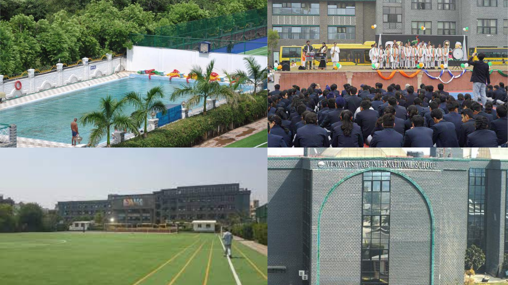

Venkateshwar International School
Where Dreams Come True....
Established by the Sri Venkateshwar Education Society (Regd.) in the year 2001, Venkateshwar International School (VIS) is a premier world-class school located in a serene and sprawling four acre campus in Sector 10, Dwarka, New Delhi.
Voted as one amongst the seven architectural marvels of West Delhi, the V.I.S. building stands tall and magnificent in its majestic splendour, not just in physical terms, but also, in its undeniable formidable reputation for providing quality education to its students. The excellent school infrastructure is accentuated by beautiful landscaping, manicured lawns and a well-maintained games and sports astro-turf field.
V.I.S. is an English medium, co-educational, CBSE affiliated school having eminent educationists, bureaucrats, technocrats, intellectuals and prominent professionals as members of the Management Committee and the Advisory Board.
Click on this link to visit the official website of Venkateshwar Internation School.Location
Sector 10 Dwarka, Dwarka, New Delhi, Delhi 110075
Gallery
